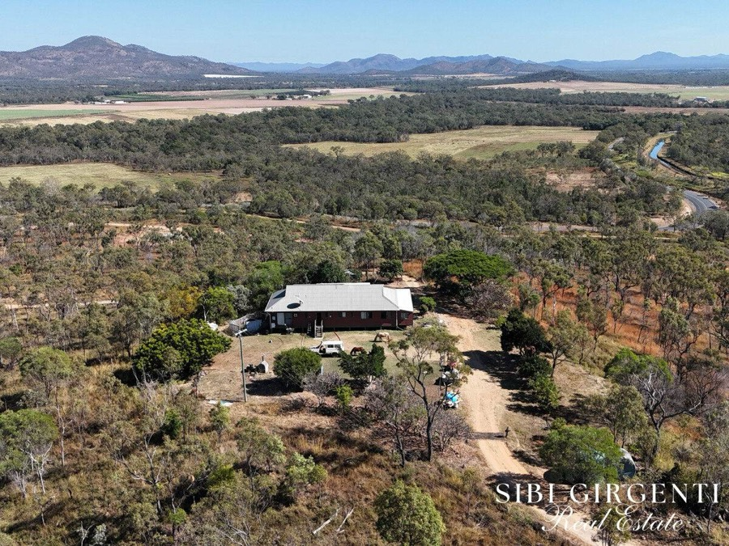
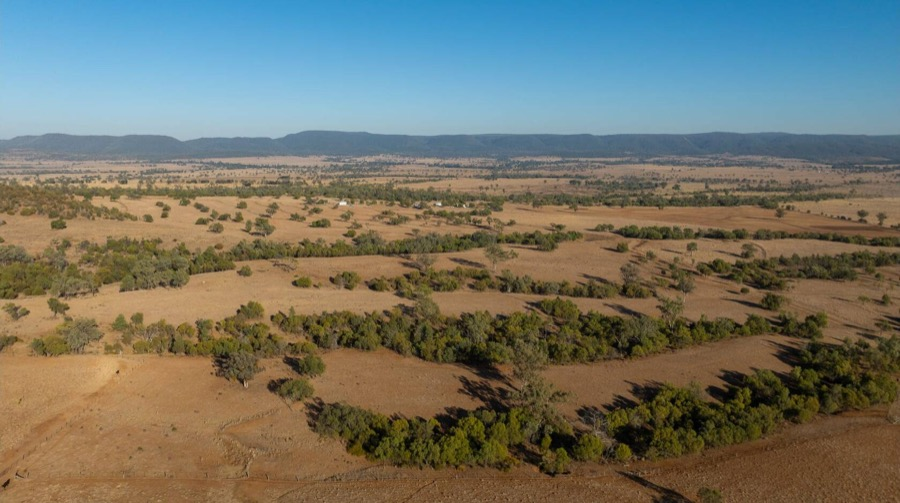
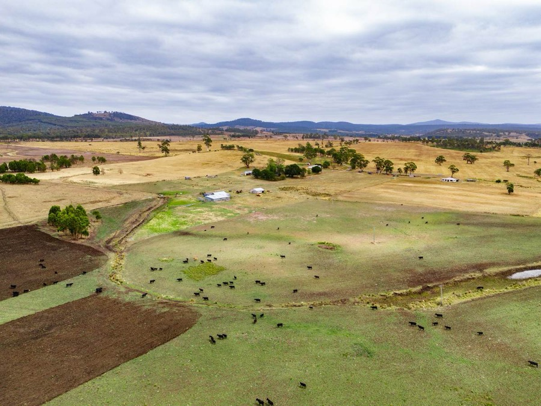
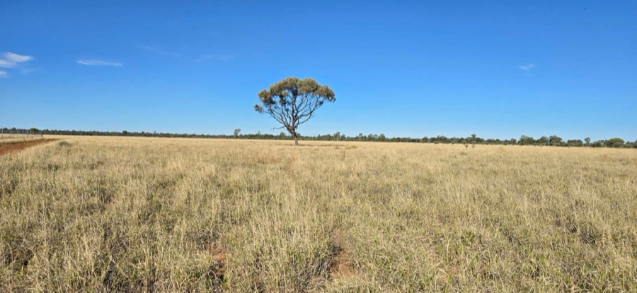
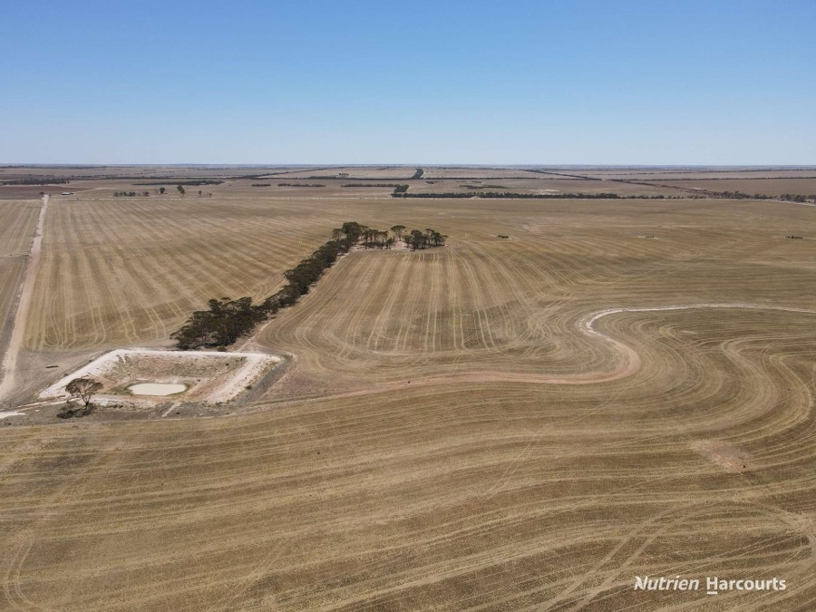
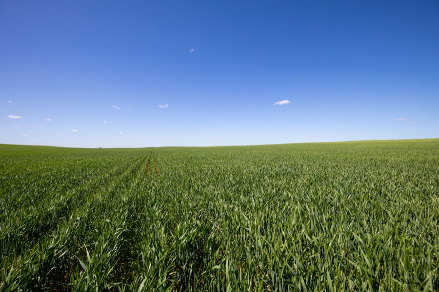
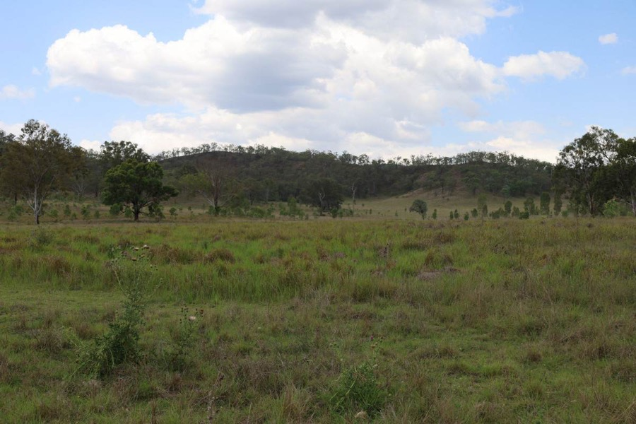
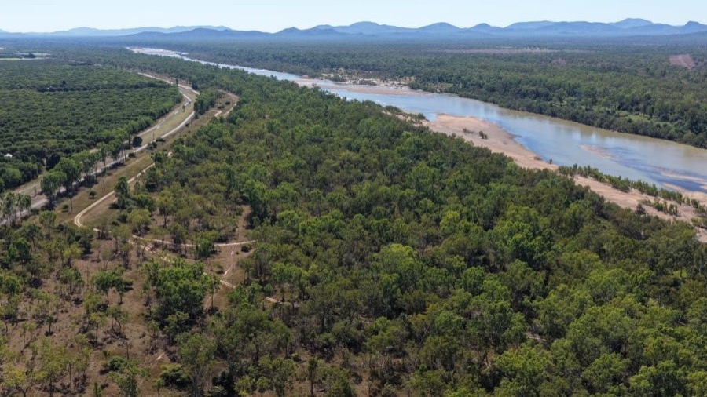

Live listings verified 22–23 Jul 2026, screened against the standing brief: AUD $1.43M–$8.58M (USD $1M–$6M at ~1.429), majority-cleared land, real subdivision or resale upside, groundwater potential, and Starlink reception (confirmed statewide, no waitlist — no property below fails this test). Search expanded nationwide 23 Jul 2026 — all 6 mainland/island states plus the NT now checked.
Planning reality check — read before falling in love with any listingNo Queensland council in the 13 checked allows broad-acre 40 ha rural subdivision.
Minimums run from 100 ha up to 5,000 ha depending on council. Two routes actually work: Route B — buy land already split across many freehold titles and resell the titles individually, no development approval needed anywhere; or Route A — build genuinely new lots via a fresh Reconfiguring-a-Lot approval, which only pencils out where the council minimum is small enough to leave real per-lot margin.
New this round — the minimum isn't always 60 haTablelands and Mareeba remain the only Queensland councils that allow genuinely new 60 ha lots. But North Burnett, Bundaberg and Banana Shire allow new lots at 100–150 ha as-of-right on qualifying agricultural land — fewer, bigger, higher-value lots per parcel rather than a lifestyle-block volume play. Two of this round's finds (Sparrows, North Burnett, and Kendah, Banana Shire) are large enough to make that math work even without pre-existing titles.
Nationwide expansion, 23 Jul 2026 — the original 40 ha ask is real, just not in QueenslandVictoria's Farming Zone defaults to a genuine 40 ha subdivision minimum statewide (confirmed in Hindmarsh, La Trobe, Glenelg — some shires even lower), and Tasmania's Rural Zone carries the same 40 ha floor as a state planning provision, not a local exception. NSW's Gwydir Shire independently confirmed 40 ha too. These aren't precinct-sized carve-outs like Goondiwindi — they're the broad standard across most of two entire states. The Northern Territory has been ruled out entirely: the great majority of NT rural land is Crown pastoral lease, not freehold, and pastoral leases can't be subdivided into saleable residential lots. South Australia and Western Australia have no comparable statewide minimum — both are merit-assessed per parcel, so multi-title arbitrage (Route B) is the practical path there.
Route B — multi-title, resell as-isRoute A — genuine new-lot subdivisionBenchmark — cheap, but not currently subdividableurgenthard deadline this weeknewsurfaced in the widened-budget round
Route A — Greenfield subdivision
Scalable machine · council minimum sets the lot size
The gap from the first pass is closed: a genuinely large, in-budget, code-assessable-eligible parcel in Mareeba Shire. This is the first candidate that fits the repeatable "cut fresh lots and sell them" model rather than relying on pre-existing titles.

Springmount, Mutchilba
Mareeba Shire Council · 30 min to Mareeba
new
Price
$3.998M
Area
346 ha
$/ha
$11,555
Elevation
524 m
White (Cat X)
~89 ha est. (~26%)
Water100 ML security via 2 on-farm dams + 75kW/10HP pumps; extra 10 ML allocation purchasable separately for $37,000
Cleared~81 ha currently cultivated (limes, dragon fruit, hay); balance in mixed ag/grazing use — confirm it isn't majority remnant vegetation before counting the whole 346 ha
Dwelling6-bed/2-bath homestead, wood stove
CaveatConfirmed Mareeba SC 60 ha code-assessable path applies. At 346 ha this could realistically yield 5+ lots after roads/setbacks — ask the agent whether it's already on multiple titles, which would help either way.
Lot/PlanPartial/unconfirmed — a "Lot 5" reference exists on a possibly-related historical record that doesn't cleanly reconcile with the current listing; needs a title search.
Sibi Girgenti Real Estate · Rino Gava 0427 779 086Listing →

Fairview, Horton Valley
Gwydir Shire Council, NSW · near Bingara
new
Price
$3.5M
Area
647 ha
$/ha
$5,410
Elevation
300 m
Unrestricted
~453 ha est. (70%)
Cleared70% arable/cleared — confirmed directly in the listing
ZoningGwydir Shire RU1 Primary Production — confirmed 40 ha minimum lot size, as-of-right
CaveatBest-verified 40 ha subdivision fit found anywhere in the national search — could theoretically yield up to 16 lots. Titles, water and dwelling status still need direct confirmation from the agent.
Lot/PlanUnavailable — would need a NSW LRS/SIX Maps title search. Listing found: 823 Eulourie Road, Bingara NSW 2404, Elders Real Estate Tamworth.
NSW rural listing — agent TBCSearch "Fairview Horton Valley Bingara"

Buckland, Court Farm Rd
Glamorgan-Spring Bay LGA, TAS · East Coast
new
Price
$4.2M+
Area
686.7 ha
$/ha
$6,116+
Elevation
360 m
Unrestricted
≥210 ha est. (≥31%)
WaterTea Tree Rivulet + 564 ML water licence; irrigation-dam potential
ClearedMajority cleared — gently undulating arable/semi-arable, 210+ ha of newly developed pasture
CaveatTasmania's Rural Zone carries a statewide 40 ha minimum, but the ACTUAL zone on this title is unconfirmed — check LISTmap (thelist.tas.gov.au) before relying on it; could be mapped Agriculture Zone instead, which blocks this entirely.
Lot/PlanUnavailable on either listing page (verified via raw HTML). A conflicting "982 ha/6 titles" figure surfaced in one search summary but could not be substantiated — treat 686.73 ha as confirmed.
Elders Real Estate Hobart · George Shea 0488 004 411Listing →
Route B — Multi-title arbitrage
Fastest path · no council approval required
Buy a holding already split across several freehold titles, then sell the titles individually. No Reconfiguring-a-Lot application, no minimum-lot-size exposure. The wider budget confirmed pricing on two properties that were previously stuck at POA, and surfaced two new large multi-title packages.

Homebush North, Mitchell
Maranoa Regional Council · 8 km N of Mitchell
best value
Price
$2.38M
Area
760 ha
$/ha
$3,132
Elevation
343 m
White (Cat X)
n/a (—)
WaterSolar bore + 2 dams
Titles7 freehold titles — ~108 ha average per title
DwellingNone on title; bitumen road frontage
CaveatWas under a backup-only offer last check — now showing "Available" again on the agent's live listings, suggesting that offer lapsed. Confirmed price, confirmed titles: the cleanest Route B match on the whole page.
Lot/PlanUnavailable — 7 titles confirmed but no individual lot/plan numbers published; the listing's "Download PDF" button is a lead-capture gate, not a real link.
CaveatStill the best all-round match on land quality — but the clock is real. Title search + veg report + a call to the agent this week if still pursuing.
Lot/PlanLot 21 on LY1001 + Lot 1 on LY32 + Lot 2 on LY1006 (corrects a typo in the listing's own reference). Areas sum to 729.19 ha, matching the listing exactly.
North Burnett Regional Council · 20 km SW of Mount Perry
new
Price
EOI
Area
1,723 ha
Titles
7
Elevation
282 m
White (Cat X)
n/a (—)
WaterNot detailed beyond general grazing suitability — no major frontage/bore flow cited, ask the agent directly
ClearedOpen forest country, sown legumes (wynn cassia/siratro/stylo) plus native grasses — good clearing status
DwellingNot specified in listing
CaveatAgents explicitly market this "whole or split into individual portions" — the seller is already thinking Route B. North Burnett's 100–400 ha minimum also gives a Route A backup even if a title split isn't ideal.
Lot/PlanUnavailable/unconfirmed.
Aussie Land & Livestock · James Bredhauer 0427 549 373Listing →
Booth Rd package, Mirriwinni
Cairns Regional Council · 50 min S of Cairns
10 titleslikely delisted
Price
$7.0M all 10
Area
~320 ha
$/ha
$21,875
Elevation
120 m
White (Cat X)
~291 ha est. (~91%)
Water4km+ Russell River frontage; sits in a 3,000mm+/yr rainfall belt
ClearedSugar cane country, high and dry; 2 homes on site
CaveatNow confirmed via Colliers: $7M for all 10 titles, or an 8-title grouping from $4.5M+. Retail-level $/ha — you're buying certainty and speed, not margin. Status flag (23 Jul, confirmed twice): the Colliers listing URL redirects to Colliers' generic homepage rather than a property page — independently confirmed both by automated fetch and by a direct browser visit, with no Wayback Machine snapshot ever recorded for this URL either. This strongly suggests the listing has sold or been withdrawn. Treat this candidate as unconfirmed until you reach the agent directly — do not rely on the $7M price above without a fresh quote.
Lot/Plan10 lots identified via a likely-matching alternate listing: Lot 2 & 1 on RP722628, Lot 69 on NR590, Lot 68/67/14/12/13/15/11 on RP845173, plus 2 road licences.
ClearedOpen black soil downs, established Buffel/summer grass pasture — majority cleared
Dwelling4-bed self-contained dongas only, no permanent homestead
CaveatA nearby district benchmark (Burradoo, sold Jul 22 at $5,946/ha) implies this could land $6.2M–$9.3M — may clear the top of budget. Worth tracking to auction regardless given the 7 titles.
Lot/PlanLot 2 on RP72951 confirmed (locality is actually "Parknook," not "Surat"); the other 6 of 7 titles are unpublished — JLL gates the full title schedule behind an agent inquiry.
JLL Agribusiness · David Summerville 0488 504 260Listing →

South Kumminin, Emu Hill Rd East
Shire of Narembeen, WA · Wheatbelt
new
Price
$4.3M
Area
1,368 ha
Titles
7
Elevation
314 m
Unrestricted
1,160 ha est. (85%)
WaterMains scheme water + 6 dams
Cleared~1,160 ha (85%) arable/cleared
CaveatThe WA agent's own read: best overall fit in the state — already 7 separate freehold titles, so subdivision risk is essentially zero. Dwelling status unconfirmed. WA's rural zones have no reliable small statewide minimum, making pre-existing titles like this the practical path there.
Lot/PlanUnavailable — 7 titles, none published. A same-road historical record (Lot 17196, DP P225582) exists but is marked off-market and can't be confirmed as part of this package.
Nutrien Harcourts WA · William Morris 0448 415 537Listing →

"Hunts", Tutye
Mildura Rural City Council, VIC · Murrayville, Mallee
new
Price
$4.5–4.86M
Area
1,968 ha
Titles
6
Elevation
78 m
Unrestricted
n/a (—)
WaterPrivately owned established bore
$/ha~$2,286–2,439 — among the cheapest confirmed prices found nationwide
Caveat6 titles already in place; Victoria's Farming Zone 40 ha default likely also applies here for a fresh subdivision on top, but Mildura's specific schedule couldn't be confirmed (portal blocked automated access) — verify via VicPlan before counting on it.
Lot/PlanConfirmed: Lot 21 (609.4 ha) + Lot 23 (323.5 ha) + Lot 27 (520.8 ha) + Lot 28 (310.5 ha) + Lot 29 (203.8 ha), Sunset Road, Tutye VIC 3512 — sums exactly to the 1,968 ha total.
CaveatCheapest confirmed price found nationwide, and already sold as three individually-priced parcels ($260k/$465k/$660k) — effectively pre-split, though formal title structure isn't confirmed. Below this page's usual 200ha+ scale screen but included for the price point.
Lot/PlanLot 91 "O'Toole's" (114 ha) + Lot 92 "O'Dea's" (197 ha) + Lots 567/69/70/71 "Spark's" (281 ha), Hundred of Yongala. Title Volume/Folio unavailable.
Elders Real Estate · Bruce Cameron 0429 471 966Queensland Country Life, Jul 2026
Benchmark — cheapest land found
Not currently subdividable at scale — hold or resell whole
Lowest $/ha in the sweep. Most sit below their council's own rural minimum, so under today's scheme they can't legally be cut into lots — useful as a price-floor reference, or as a whole-property hold/flip. Two new entries from the widened band.

Pine Mountain, Monto
North Burnett Regional Council
under offer
Price
$1.2M
Area
1,461 ha
$/ha
$821
Elevation
238 m
White (Cat X)
99.7 ha (6.8%)
WaterBore, dams, seasonal creek flow
ClearedWell-grassed fertile flats rising to timbered country — partially cleared
CaveatCheapest $/ha found in either round — but currently Under Offer, may already be gone. North Burnett's 100–400 ha minimum means this could theoretically yield 4–14 new lots if it ever recycles back onto the market. Worth asking the agent for similar off-market stock.
Lot/PlanLot 3 on RW362 (Lands Lease tenure, consistent with the listing's "single GHPL title").
ClearedSignificant areas recently pulled and stick-raked, plus shaded grazing
DwellingHomestead (3bd/1ba) + second cottage
CaveatCheapest confirmed-available $/ha in the sweep. Check whether it sits in Goondiwindi's Horticulture 1 or Rural Res C2 precinct — the only way 40 ha splits become legal here.
Lot/PlanLot 4 on BNT1113 (confirmed by exact area match). Caution: naive address-geocoding points to a superseded older lot (22 on BNT443) — Lot 4/BNT1113 is the correct current title.
Elders QLD Rural · Andrew Williams 0429 004 299Listing →

Dalbeg, Ayr-Dalbeg Road
Burdekin Shire · Burdekin River system
new
Price
$2.0M negotiable
Area
1,411 ha
$/ha
$1,417
Elevation
67 m
White (Cat X)
31.9 ha (2.6%)
WaterRiver frontage on the Burdekin system — described as "prime grazing land with river frontage"
TitlesSingle title
CaveatBurdekin Shire's rural subdivision minimum hasn't been verified in this sweep — treat as a cheap benchmark until that's confirmed, not yet a Route A/B claim.
Lot/PlanLot 58 on SP143789 (lease) + Lot 3 on D9153 (freehold shed block, confirmed by exact match). Survey area (~1,213–1,301 ha) runs 8–14% below the marketed 1,411 ha — verify against the lease file before any valuation.
Water14 dams, house dam with windmill, 22,500 gal rainwater; no bore yet — GAB country, drilling upside
ClearedFully cleared, sown to Queensland Blue, Buffel and Purple Pidgeon grass
CaveatTara is Queensland's proven off-grid-block resale micro-market — but at 1,002 ha this sits barely above Western Downs' own 1,000 ha minimum, so it's essentially one lot.
Lot/PlanLot 4 on DY135 (single title, exact area match).
Water3 bores, 3 wells, 2 dams — strong water infrastructure for the size
TitlesSingle title, one family 65 years
CaveatSits above Banana Shire's own 150 ha (agricultural land) minimum — if it qualifies as Class A/B ag land, this could support genuine Route A subdivision at ~150 ha lot size, not just a resale-whole play. Pricier per hectare than the raw-land ideal, but worth a planning check before ruling out.
Lot/PlanLot 1 (222.31 ha) & Lot 2 (48.53 ha) on RP605503, Lot 234 (165.11 ha) & Lot 235 (138.76 ha) on RN165 — sums to exactly 574.70 ha.
Ruled out this round: Ballangarry, Thallon (3,704 ha) — withdrawn from market. The Haven, Drillham (1,290 ha, $8.3M, 93% Cat X) — under offer. Delco, Duaringa (7,162 ha, $5.3M) — mostly leasehold to 2077, not freely resellable. Goondiwindi Grain Hub (~6,550 ha) and Wondalli Aggregation (3,853 ha, 3 titles) — institutional-scale developed cropping infrastructure, priced well above raw-land economics despite multi-title structure. Green Yards, Theodore (1,385 ha, 2 titles) — EOI closed Feb 2026, status unconfirmed. Crystal Hills, Duaringa ($3.2M/781 ha) — single title, well under Central Highlands' 2,000 ha minimum. Blunder Park, Innot Hot Springs (7,513 ha, Tablelands RC) — oversized and 2.25 hrs from Cairns, weak resale-lot demand. FNQ horticulture blocks (avocado/mango, Walkamin/Arriga) — priced $30,000–115,000/ha, far too expensive per hectare for this model.
Off-grid lot package — verified cost reference
What each buildable lot needs before it's sellable, and who pays for it.
Water bore
$10k–25k
Licence-free for stock & domestic use statewide, except Great Artesian Basin / declared groundwater areas — check per parcel on Queensland Globe. Licensed driller mandatory.
Septic system
$8k–15k
Council approval under the Plumbing & Drainage Act. Typically paid by the lot buyer at build time, not the subdivider.
Access road
$100k+/km
Greenfield gravel formation with earthworks and drainage. The single biggest cost line — favour parcels with long public-road frontage to minimise new road needed.
Power & internet
Solar + Starlink
South Burnett Council approved a subdivision lot on stand-alone solar + battery, Sep 2025. Starlink: full QLD coverage, no waitlist, 2026.
National comparison — states checked (verified 23 Jul 2026)
Green rows: a genuine, broad statewide minimum at or near 40 ha. Red-ish/grey row: ruled out entirely. Everything else needs either a small local precinct (like QLD) or multi-title arbitrage (Route B) since there's no reliable small statewide number.
State
Subdivision framework
QLD real estate licence transfers?
Stock & domestic bore
Victoria
Farming Zone defaults to 40 ha statewide; Rural Living Zone as low as 8 ha
No — company needs a separate VIC licence (mutual recognition covers individuals only)
Licence-free; works/bore-construction licence still required
Tasmania
Rural Zone = 40 ha statewide (State Planning Provisions); Rural Living Zone 1–10 ha where mapped
Unresolved — verify with Tasmanian Consumer Affairs before relying on it
Licence-free for stock/domestic under the Water Management Act 1999
Queensland
100 ha–5,000 ha by council; 40–60 ha only in specific precincts (Mareeba/Tablelands, Goondiwindi Horticulture 1)
— (home state)
Licence-free statewide except GAB/declared groundwater areas
New South Wales
No statewide figure — set per council Lot Size Map. Confirmed range 40 ha (Gwydir) to 400 ha (Narromine)
No — separate NSW corporate licence needed
Licence-free ("basic landholder rights"); separate works approval to construct the bore
South Australia
No statewide figure — merit-assessed per parcel via Technical & Numeric Variations; Rural Living Zone (pre-mapped, near towns) is the only reliably small option
Licence-free outside proclaimed areas (most inland Wheatbelt); domestic/stock use exempt even inside most proclaimed areas
Northern Territory
Ruled out. ~44% of the NT is Crown pastoral lease, which can only be subdivided for pastoral purposes with Ministerial approval — results in more leasehold, not saleable freehold. Remaining freehold pockets are small, near-town, and priced for irrigation infrastructure. No viable path to this buyer's model.
Rural subdivision minimums by Queensland council (verified Jul 2026)
Green rows: FNQ-only 60 ha code-assessable path. Blue rows: 100–150 ha as-of-right path on qualifying land — fewer/bigger lots, but no pre-existing titles required.
Council
Min. new rural lot
Dwelling on lot?
Note
Tablelands RC
60 ha
Yes
Code-assessable in Ag Land / General Rural precincts
Mareeba SC
60 ha
Yes
Code-assessable since Dec 2023 amendment — Springmount candidate sits here
Goondiwindi RC
400–1,000 ha
Yes
40 ha only inside mapped Horticulture 1 / Rural Res C2 precincts
South Burnett RC
100 ha
Restricted
20 ha Winery precinct exists but dwelling right is stripped
Bundaberg RC
100 ha
Yes
—
North Burnett RC
100–400 ha
Yes
100 ha Intensive Ag precinct — Sparrows, Pine Mountain sit here
Western Downs RC
1,000 ha
Yes
Court-backed refusals of sub-minimum splits
Maranoa RC
300–600 ha
Yes
—
Banana Shire
150–500 ha
Yes
150 ha on ALC Class A/B ag land — Kendah sits here
Isaac RC
500–5,000 ha
Yes
—
Central Highlands RC
2,000 ha
Yes
Most restrictive gazetted minimum on the list
Charters Towers RC
5,000 ha
Unverified
—
Burdekin Shire
Unverified
Unverified
Dalbeg candidate sits here — not yet checked
What "White (Cat X)" means, and where it does — and doesn't — apply
Category X ("white area") is a Queensland-specific term from the state's Regulated Vegetation Management map: land classified white/Cat X has essentially no clearing restriction, versus Category B (remnant vegetation, heavily restricted) or C (high-value regrowth, restricted). It only exists as a formal legal classification in Queensland — it does not apply in NSW, Victoria, Tasmania, South Australia or Western Australia, each of which has its own separate (and differently-named) native-vegetation framework.
Practical effect on this page: the 12 Queensland properties below show a real "White (Cat X)" figure — government GIS-confirmed for 9 of them via direct query of Queensland's spatial data services, the same data that powers Queensland Globe. The 5 non-Queensland properties (Fairview NSW, Buckland TAS, South Kumminin WA, Hunts VIC, Peterborough SA) instead show "Unrestricted" — each state's best available cleared/arable estimate from listing text, since no formal classification was found for those specific titles. Treat the two labels as different confidence tiers, not the same thing with different names.
Where they are
All 17 candidates, plotted by locality. This is a schematic locator map (approximate town-level positions, not surveyed parcel boundaries) — click a pin to open its listing, or jump to its card if no listing link exists yet.
Route BRoute ABenchmark
All 17 candidates, ranked by $/m² of unrestricted land
The single reference table for every property on this page — location, price, size, elevation, unrestricted/white land, and the resulting $/m². Sorted best value first; properties with no usable-area estimate are grouped at the bottom, not omitted. "White (Cat X)" is a Queensland-specific vegetation-mapping term and only applies to the 12 QLD rows below (bold $/m² = confirmed via direct government GIS query, not an estimate); the 5 non-QLD properties show each state's best-available cleared/arable estimate instead under "Unrestricted" — see the explainer above the map for detail on this distinction.
⚠ = red flag, worth extra scrutiny before proceeding. * Ashton Grove's 0.4% is from only 1 of 7 titles — not used for $/m² since 6 titles are unverified. Elevation is locality-level (SRTM 30m), not parcel-exact. "Rough est." = not a formal classification of any kind, weakest confidence tier.
Long-term hold — tree cultivation (黄花梨 · 檀香 · 柚木)
A parallel strategy to subdivide-and-resell: growing high-value timber as a multi-decade hold. These three species have very different climate needs, Australian track records, and regulatory profiles — and critically, none of them grow in the climate zones where most of this page's 17 candidates sit. All three want genuinely tropical or near-tropical conditions (Far North Queensland's wet tropics, the Ord River WA/NT border, or the NT's Katherine/Douglas Daly region) — a different part of the country from the inland QLD, WA Wheatbelt, Victorian Mallee, Tasmanian and SA candidates that fit the subdivision model.
黄花梨 · Huanghuali
Dalbergia odorifera · Chinese/Hainan rosewood
Climate
Tropical monsoon, frost-free, 21–27°C
Rainfall
1,500–2,000 mm/yr
Soil
Fertile, well-drained loam; hates waterlogging
Altitude
100–600 m
To any heartwood
20–30 yrs minimum
To prized heartwood
50–100+ yrs
Verdict — speculative, gated on one unresolved questionZero Australian precedent — no trial, plantation or even herbarium record found anywhere in the country. CITES Appendix II (genus-wide since 2017) is manageable — no restriction on growing or domestic sale, only future export needs a permit. The real gating question is whether Australian biosecurity (BICON) even permits importing the seed/seedlings at all — this could not be confirmed and must be checked before anything else. Even if cleared, young plantation timber often fails China's own official density standard for "genuine hongmu," and there is no liquid market for wood at any age under ~50 years. Best-fit region: coastal FNQ (Cairns/Daintree wet tropics), well-drained sites specifically. No current candidate sits in this zone.
檀香 · Sandalwood
Santalum spicatum (WA native) or S. album (Indian) — very different profiles
S. spicatum climate
Mediterranean, frost- & drought-tolerant
S. spicatum rainfall
300–600 mm/yr (WA Wheatbelt)
S. album climate
Tropical, frost-free, irrigated
S. album rainfall
600–2,200 mm/yr (Ord River)
Both
Hemiparasitic — needs host trees (Acacia spp.)
To harvest
S. spicatum 20–25 yrs; S. album ~15 yrs
Verdict — the one with a real, de-risked pathway
Not CITES-listed (either species). S. spicatum in the WA Wheatbelt is the standout: WA's Forest Products Commission runs an actual smallholder sharefarming program (20 ha minimum), plantation-grown stock is largely exempt from wild-harvest licensing, and a published unit-economics model shows positive NPV against conventional wheat cropping over 20 years. South Kumminin (this page's WA candidate, Shire of Narembeen) sits in this exact growing zone — a plausible dual-purpose hold. S. album in the Ord River/NT offers far higher $/kg (oil ~$2,000–4,200/kg vs. ~$5.50/kg wood for S. spicatum) but the dominant operator, Quintis, has now collapsed twice (2018, again April 2024) with prices crashed to ~1/10 of peak before a partial recovery — entering today means buying distressed assets through receivership, not a clean greenfield start.
柚木 · Teak
Tectona grandis
Climate
Tropical, frost-sensitive, 25–30°C
Rainfall
1,200–2,500 mm/yr with a dry season
Soil
Deep, fertile, well-drained, pH 6.5–7.5
Altitude
Below ~700–1,000 m
To commercial harvest
20–25 yrs (best quality 25–30+)
CITES
Not listed
Verdict — already tried at scale here, and it failed
Katherine/Douglas Daly (NT) and the irrigated Ord River (WA) reasonably match teak's needs. But Australia already ran this experiment: Great Southern's ~2,400 ha teak scheme (2007–2009) in Tully (FNQ) and Douglas Daly (NT) collapsed with the company in 2009. The NT Government's own trial data concludes teak here is at best a "boutique industry," not cost-competitive with Southeast Asian/Central American plantation teak — the industry has since consolidated around African mahogany instead (now AU$3,000–5,500/m³ for select-grade timber). A genuine regulatory flag: Queensland's own WildNet database classifies Tectona grandis as an "Environmental Weed" (naturalised/introduced pest status) — not a hard restriction yet, but a real planning risk to raise with Biosecurity Queensland before any FNQ site.
Bottom line: if this is worth pursuing seriously, it's a genuinely different property search — coastal FNQ wet tropics, the Ord River WA/NT border, or Katherine/Douglas Daly NT — not a reason to prefer one of this page's existing 17 candidates, with the single exception of South Kumminin as a possible dual-purpose WA Wheatbelt sandalwood play. Say the word and a dedicated search of those three regions can run next.